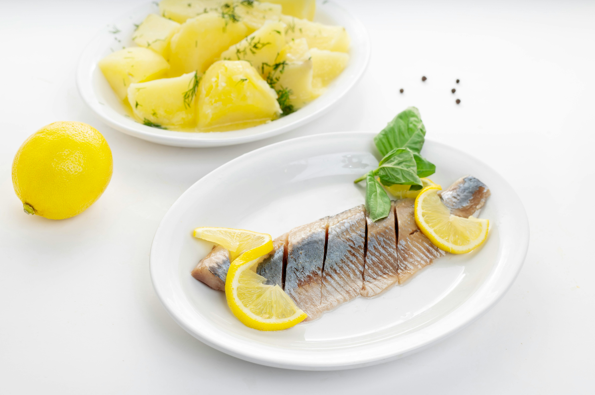

Pickled Herring

A staple of Scandinavian cuisine, pickled herring is a tangy, savory delicacy made by curing fresh herring fillets in a brine of vinegar, sugar, onions, and aromatic spices like allspice and bay leaf.
The result is a flavorful, slightly sweet fish with a firm texture, often served chilled with rye bread, potatoes, or sour cream. It's a timeless Viking-era preserve that balances tradition, taste, and long shelf life.
Ingredients
- 1/4 cup kosher salt
- 5 cups water, divided
- 1 pound herring fillets
- 2 cups distilled or white wine vinegar
- 1/4 cup sugar
- 1 teaspoon mustard seed
- 2 teaspoons whole allspice
- 2 teaspoons black peppercorns
- 3 bay leaves
- 3 cloves
- 1 lemon, thinly sliced
- 1 medium red onion thinly sliced
Directions
- Heat 4 cups of water enough to dissolve salt.
Let this brine cool to room temperature. When it does, submerge the herring fillets in the brine and refrigerate overnight, or up to 24 hours.
Meanwhile, bring the sugar, vinegar, the remaining cup of water and all the spices to a boil.
Simmer 5 minutes, then turn off the heat and let this steep until cool.
- When the herring have brined, layer them in a glass jar with the sliced lemon and red onion.
Divide the spices between your containers if you are using more than one.
Pour over the cooled pickling liquid and seal the jars.
Wait at least a day before eating.
Store in the fridge for up to 1 month.
Home